Chapter 1 Geographic Information
1.1 Learning outcomes
By the end of this practical you should be able to:
- Describe and explain GIS data formats and databases
- Source and pre-process spatial data
- Load and undertaken some basic manipulation of spatial data in QGIS and R
- Evaluate the (dis)advantages of each GIS you have used
1.2 Homework
Outside of our scheduled sessions you should be doing around 12 hours of extra study per week. Feel free to follow your own GIS interests, but good places to start include the following:
Exam
Each week we will provide a short task to test your knowledge, these should be used to guide your study for the final exam.
The task is to join some non spatial data to some spatial data.
Go to the New Zealand spatial data portal and download the file Territorial Authority 2018 (generalised), these are city or district councils
Go to the Stats NZ website and download the Statistical area 1 dataset for 2018 for the whole of New Zealand.
Unzip the downloaded census file and open 2018-SA1-dataset-individual-part-3a-total-NZ_updated_16-7-20, you will see a tab for Territorial authority. Join the 2018 paid employee field to the spatial data and make a basic map. Hint, you may need to make a new
.csvfile from the data.
Reading
Each week i’ll provide a core chapter to support the skills taught here. However, you are free to read whatever interests you and Adam and I strongly encourage this, so please don’t be constrained to this recommendation. Consult the reading list, practical and lecture each week for more ideas.
This week: - The Value of GIS & Spatial Data Science in Achieving the Sustainable Development Goals by Cobus van Rooyen
Chapter 2 “Geographic data in R” from Geocomputation with R by Lovelace, Nowosad and Muenchow (2020).
Opening practice: supporting reproducibility and critical spatial data science by Brunsdon and Comber (2020)
Watching
- What is Spatial Data Science from some of our friends at CARTO
1.3 Recommended listening 🎧
Some of these practicals are long, take regular breaks and have a listen to some of our fav tunes each week.
Andy. Week 1. No other choice than Vampire Weekend. The band formed during college (University in the USA) and produced their first album of their own whilst working full time jobs! Incredible. The lead vocalist and guitarist Ezra Koenig was a school teacher in Brooklyn, New York. I’ve seen them a few times at Glastonbuty and in London during which they gave the people what they wanted and took requests from their entire catalogue, really amazing musicians. Note some of the guest appearances in this album as they also might make an apperance later in the term!
Adam OK, it’s week 1, so I’m going in HARD. This week it’s the raver’s raver, the DJ’s DJ. This man is a style icon and so drum & bass it hurts - it’s Voltage! Here he is with his new album, Balance Over Symmetry. This will surprise a lot of people as it’s an eclectic mix of DnB bangers through to some Burial-inspired minimal dubstep. Follow him on Instagram and get your ears around his brilliant.
1.4 The Basics of Geographic Information
Geographic data, geospatial data or geographic information is data that identifies the location of features on Earth. There are two main types of data which are used in GIS applications to represent the real world. Vectors that are composed of points, lines and polygons and rasters that are grids of cells with individual values…

In the above example the features in the real world (e.g. lake, forest, marsh and grassland) have been represented by points, lines and polygons (vector) or discrete grid cells (raster) of a certain size (e.g. 1 x 1m) specifying land cover type.
1.4.1 Data types in statistics
Before we go any further let’s just quick go over the different types of data you might encounter
Continuous data can be measured on some sort of scale and can have any value on it such as height and weight.
Discrete data have finite values. It can be numeric such as number of shoes or categorial such as positive or negative.
Foot length would be continuous data but shoe size would be discrete data.

Nominal data has labels without any quantitative value such as hair colour or type of animal.
Ordinal data has an order or scale, for example if you have ever seen the chilli rating system on food labels or filled a happiness survey with a range between 1 and 10 — that’s ordinal. Here the order matters, but not the difference between them.
Binary data is that that can have only two possible outcomes, yes and no or shark and not shark.

1.4.2 Important GIS data formats
There are a number of commonly used geographic data formats that store vector and raster data that you will come across during this course and it’s important to understand what they are, how they represent data and how you can use them.
1.4.2.1 Shapefiles
Perhaps the most commonly used GIS data format is the shapefile. Shapefiles were developed by ESRI, one of the first and now certainly the largest commercial GIS company in the world. Despite being developed by a commercial company, they are mostly an open format and can be used (read and written) by a host of GIS Software applications.
A shapefile is actually a collection of files —- at least three of which are needed for the shapefile to be displayed by GIS software. They are:
.shp- the file which contains the feature geometry.shx- an index file which stores the position of the feature IDs in the.shpfile.dbf- the file that stores all of the attribute information associated with the coordinates – this might be the name of the shape or some other information associated with the feature.prj- the file which contains all of the coordinate system information (the location of the shape on Earth’s surface). Data can be displayed without a projection, but the.prjfile allows software to display the data correctly where data with different projections might be being used
On Twitter and want to see the love for shapefiles….have a look at the shapefile account
1.4.2.2 GeoJSON
GeoJSON Geospatial Data Interchange format for JavaScript Object Notation is becoming an increasingly popular spatial data format, particularly for web-based mapping as it is based on JavaScript Object Notation. Unlike a shapefile in a GeoJSON, the attributes, boundaries and projection information are all contained in the same file.
1.4.2.3 Shapefile and GeoJSON
We’re now going to explore a shapefile (.shp ) and GeoJSON (.geojson) in action.
Go to: http://geojson.io/#map=16/51.5247/-0.1339
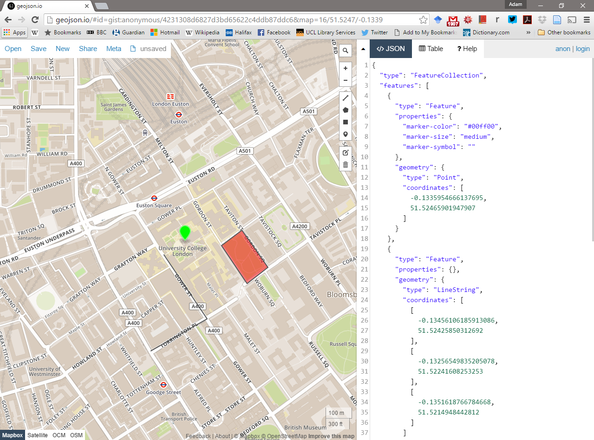
- Using the drawing tools to the right of the map window, create 3 objects: a point, line and a polygon as I have done above. Click on your polygon and colour it red and colour your point green
- Using the ‘Save’ option at the top of the map, save two copies of your new data – one in
.geojsonformat and one in.shpformat - Open your two newly saved files in a text editor such as notepad or notepad++. For the shapefile you might have to unzip the folder then open each file individually. What do you notice about the similarities or differences between the two ways that the data are encoded?
1.4.2.4 Raster data
Most raster data is now provided in GeoTIFF (.tiff) format, which stands for Geostarionary Earth Orbit Tagged Image File. The GeoTIFF data format was created by NASA and is a standard public domain format. All necesary information to establish the location of the data on Earth’s surface is embedded into the image. This includes: map projection, coordinate system, ellipsoid and datum type.
1.4.2.5 Other data formats
Aforementioned data types and formats are likely to be the ones you predominately encounter. However there are several more used within spatial analysis. These include:
Vector
- GML (Geography Markup Language —- gave birth to Keyhold Markup Language (KML))
Raster
- Band SeQuential (BSQ) - technically a method for encoding data but commonly referred to as BSQ.
- Hierarchical Data Format (HDF)
- Arc Grid
There are normally valid reasons for storing data in one of these other formats. For example, BSQ are raster data with a separate text header file (.hdr) providing geographic spatial reference information. Earth observation data often monitors the electromagnetic spectrum in bands. Humans see in the visible range of the spectrum and our vision is composed of red, green and blue wavelengths. If we wanted to analyse just the red wavelength the BSQ format would let us read in only that data. In comparison a GeoTIFF might come with all the data ‘packaged’ in one file and when doing analysis over thousands of images would significantly slow things down. That said you can now often find GeoTIFFs separated in a similar format to BSQ and it’s fairly straightforward to convert between raster formats.
1.4.2.6 Geodatabase
A geodatabase is a collection of geographic data held within a database. Geodatabases were developed by ESRI to overcome some of the limitations of shapefiles. They come in two main types: Personal (up to 1 TB) and File (limited to 250 - 500 MB), with Personal Geodatabases storing everything in a Microsoft Access database (.mdb) file and File Geodatabases offering more flexibility, storing everything as a series of folders in a file system. In the example below we can see that the FCC_Geodatabase (left hand pane) holds multiple points, lines, polygons, tables and raster layers in the contents tab.
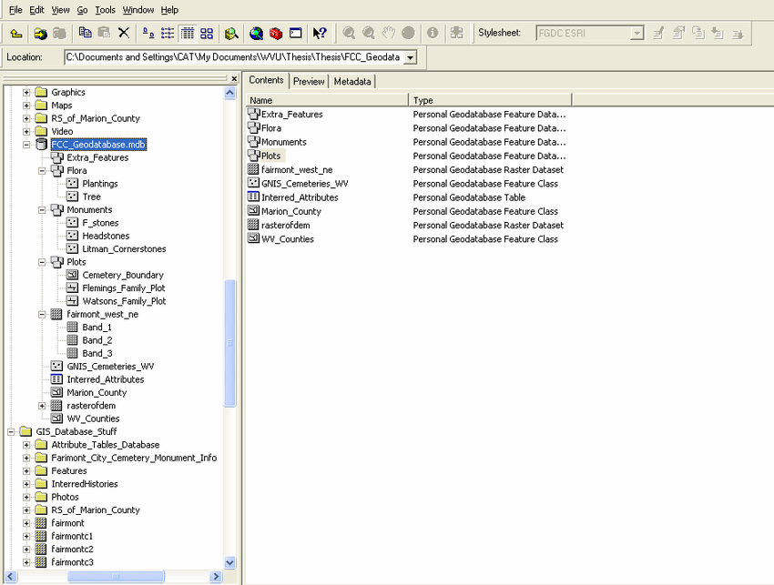
1.4.2.7 GeoPackage

A GeoPackage is an open, standards-based, platform-independent, portable, self-describing, compact format for transferring geospatial data. It stores spatial data layers (vector and raster) as a single file, and is based upon an SQLite database, a widely used relational database management system, permitting code based, reproducible and transparent workflows. As it stores data in a single file it is very easy to share, copy or move.
1.4.2.8 SpatiaLite

SpatialLite is an open-source library that extends SQLite core. Support is fairly limited and most software that supports SpatiaLite also supports GeoPackage, as they both build upon SQLite. It doesn’t have any clear advantage over GeoPackage, however it is unable to support raster data.
1.4.2.9 PostGIS

PostGIS is an opensource database extender for PostrgeSQL. Essentially PostgreSQL is a database and PostGIS is an add on which permits spatial functions. The advantages of using PostGIS over a GeoPackage are that it allows users to access the data at the same time, can handle large data more efficiently and reduces processing time. In this example calculating the number of bars per neighbourhood in Leon, Mexico the processing time reduced from 1.443 seconds (SQLite) to 0.08 seconds in PostGIS. However, data stored in PostGIS is much harder to share, move or copy.
1.4.2.10 What will I use
The variety of data formats can see a bit overwhelming. I still have to check how to load some of these data formats that I don’t use frequently. But don’t worry, most of the time you’ll be using shapefiles, GeoPackages or raster data.
1.5 General data flow
As Grolemund and Wickham state in R for Data Science…
“Data science is a huge field, and there’s no way you can master it by reading a single book.”
However, a nice place to start is looking at the typical workflow of a data science (or GIS) project which you will see throuhgout these practicals, which is summarised nicely in this diagram produced by Dr. Julia Lowndes adpted from Grolemund and Wickham.

To begin you have to import your data (not necessarily environmental) into R or someother kind of GIS to acatually be able to do any kind of analysis on it.
Once imported you might need to tidy the data. This really depends on what kind of data it is and we cover this later on in the course. However, putting all of your data into a consistent structure will be very beneficial when you have to do analysis on it — as you can treat it all in the same way. Grolemund and Wickham state that data is tidy when “each column is a variable, and each row is an observation”, we cover this more in next week in the Tidying data section.
When you have (or haven’t) tidied data you then will most likely want to transform it. Grolemund and Wickham define this as “narrowing in on observations of interest (like all people in one city, or all data from the last year), creating new variables that are functions of existing variables (like computing speed from distance and time), and calculating a set of summary statistics (like counts or means)”. However, from a GIS point of view I would also include putting all of your data into a similar projection, covered next week in Changing projections and any other basic process you might do before the core analysis. Arguably these processes could include things such as: clipping (cookie cutting your study area), buffering (making areas within a distance of a point) and intersecting (where two datasets overlap).
Tidying and transfrom = data wrangling. Remember from the introduction this could be 50-80% of a data science job!

After you have transformed the data the next best thing to do is visualise it — even with some basic summary statistics. This simple step will often let you look at your data in a different way and select more appropraite analysis.
Next up is modelling. Personally within GIS i’d say a better term is processing as the very data itself is usually a computer model of reality. The modelling or processing section is where you conduct the core analysis (more than the basic analysis already mentioned) and try to provide an answer to your research question.
Fianlly you have to communicate your study and outputs, it doesn’t matter how good your data wrangling, modelling or processing is, if your intended audience can’t interpret it, well, it’s pretty much useless.
In a few weeks come back and revisit this data flow section to see how what you have learnt fits the framework presented.
1.6 Data
The volume of geographic information which is freely available for use in the UK is increasing exponentially and spatially referenced data can often be found in many different places. In this practical we’re going to use data from the London data store — a free and open data-sharing portal provided by the Greater London Authority (GLA), also known as City Hall that is the devolved regional governance body of London.
We are going to get spatial data of the London boroughs and join flytipping (the illegal deposit of waste, commonly on road verges) data that is provided as a .csv file. .csv stands for comma-separated values (CSV) — it uses a comma to separate each value.
At the end of this document I’ll also run through some common sources of data that will stand you in good stead (be advantageous) for the rest of the course.
1.6.1 File paths
In your N drive: create a new folder called GIS and within this a sub folder called wk1. It is up to you how you organise your files. Make sure you change the file paths where appropriate to your own.
1.6.2 Data download
Firstly we need to get a spatial outline of the London boroughs. The geographic boundaries that are used in the UK are a complex, often inter-related, but ever changing mass of areas. For anyone new to the UK (or indeed not a trained quantitative geographer), it can be quite a daunting task to attempt to understand all of the boundaries that are in use. Fortunately the Office for National Statistics (ONS) has an online beginners guide to UK geography. If you need more information on the vast array of different UK geographies, go and explore these resources:
- A Beginners Guide to UK Geography (2019) v1.0
- https://geoportal.statistics.gov.uk/datasets/9c04ff58854040d09a5a7ce146ab59b4
Let’s download some data..
- Spatial Data
To get the data go to the London data store
Search for Statistical GIS Boundary Files for London
Download the statistical-gis-boundaries-london.zip
Unzip the data and save it to your wk1 folder.
- CSV data
On the same website search for fly-tipping incidents
Download the
.csvfile
1.6.3 Data pre-processing
Question Open the .csv in Excel, what do you notice about how the data is stored?
Answer The year is a column and for each area the values are repeated for different years. In our analysis it is easier to have the different years as a column and populated for each area. So, we want to go from this…
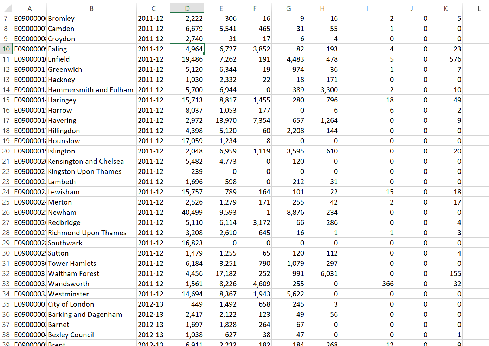
To this…
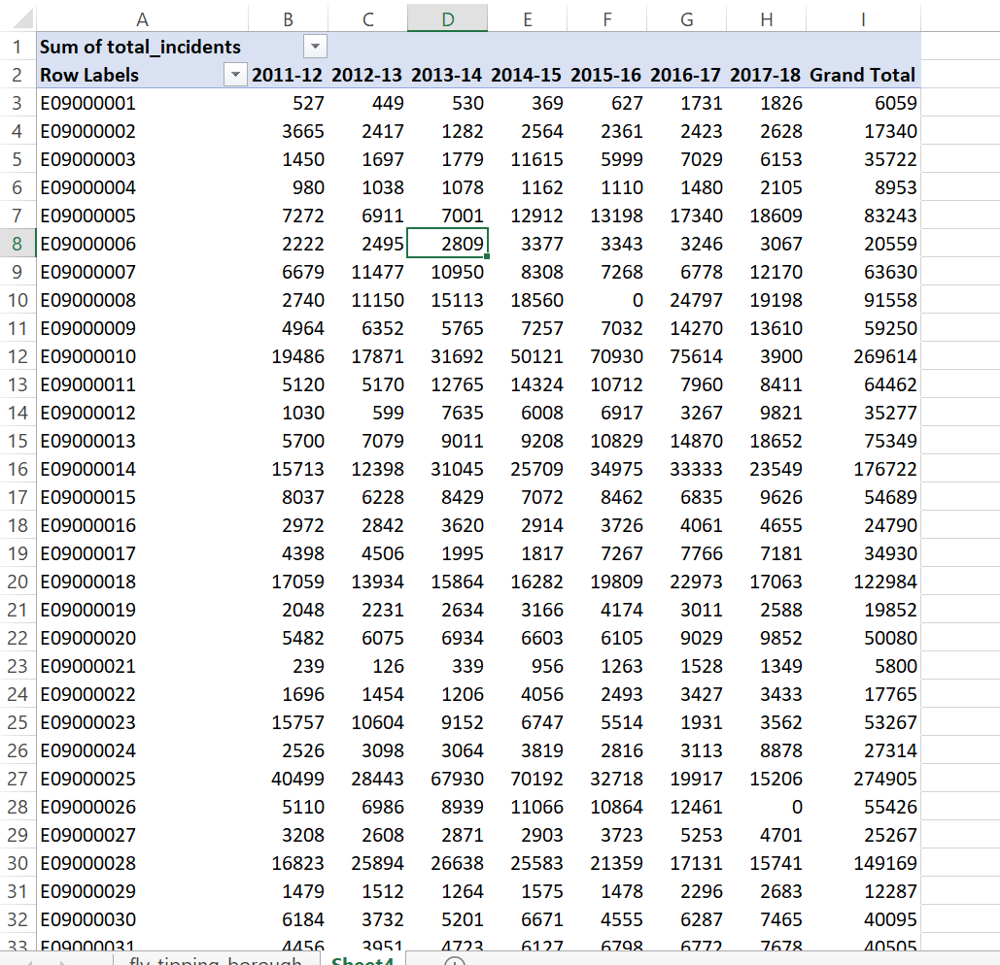
Scroll to the end of the .csv and look at the data in the final rows. The last year should be 2017-2018. If you have years such as 2018-2020 then delete these rows.
As we are going to use this dataset in QGIS and R I’ve done it in Excel using a pivot table. In future we’ll use R to automate tasks like this.
Go to Insert > PivotTable
Select the original table and create a PivotTable in a new worksheet
The PivotTable Field box will appear, experiment with the different fields in each of the areas
I’ve used the following:
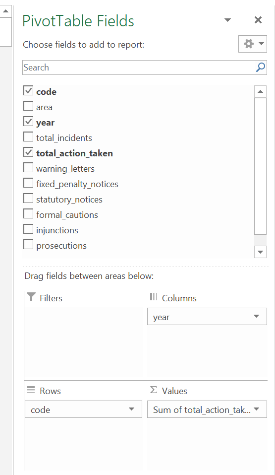
Note how I’ve altered the total_action_taken to the sum of… as the original was displaying incorrectly, to do so:
- Click on drop down button for total_action_taken > Value Field Settings > select Sum
It’s important to think about what data we actually need in the next step and it’s good practice to avoid data redundancy where possible.
Spoiler The spatial data we have downloaded already contains borough name, so we don’t need it twice. However, we do need a field to link the two datasets on. You could use borough name, but when using text fields sometimes input variations can affect joins. For example, if you had the University of Manchester in one dataset and Manchester University in another the join would fail. Consequently it’s usually best to join datasets on a code field.
Now save the Excel sheet that contains the pivot table as a new .csv. Make sure that the first row of data holds the column titles. Remove all empty rows.
When saving the file also avoid any special characters (e.g. -) and spaces, use an underscore instead of spaces.
Warning Spatial software does not like file names with spaces or special characters.
Now it’s time to load, inspect and do some basic manipulation of this data. As mentioned in the lecture there are several GIS software ‘types’, here we will repeat the same process across QGIS and R.
1.6.4 QGIS
1.6.4.1 Load data
- Search for and open QGIS
- Click on the open data source manager. Just above the word browser in the top left of the screen
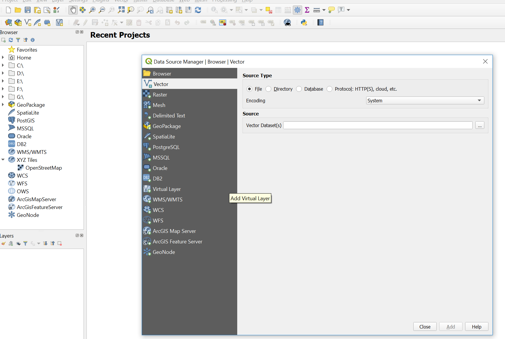
- Navigate to the
London_Borough_Excluding_MHW.shpand add it, you then have to close the data source manager.
You can right click on the layer to view the attribute table, however the .csv file must be loaded nto QGIS in order to join it to a shapefile.
- Open the data source manager and select Delimited Text
- Navigate to our
.csvfile and provide a suitable layer name - Under Record and Fields Options make sure the number of header lines to discard is 0 and the First record has field names box is selected (this is assuming you left a title for each column in your
.csv) - Under Geometry Definition select No geometry (attribute table only)
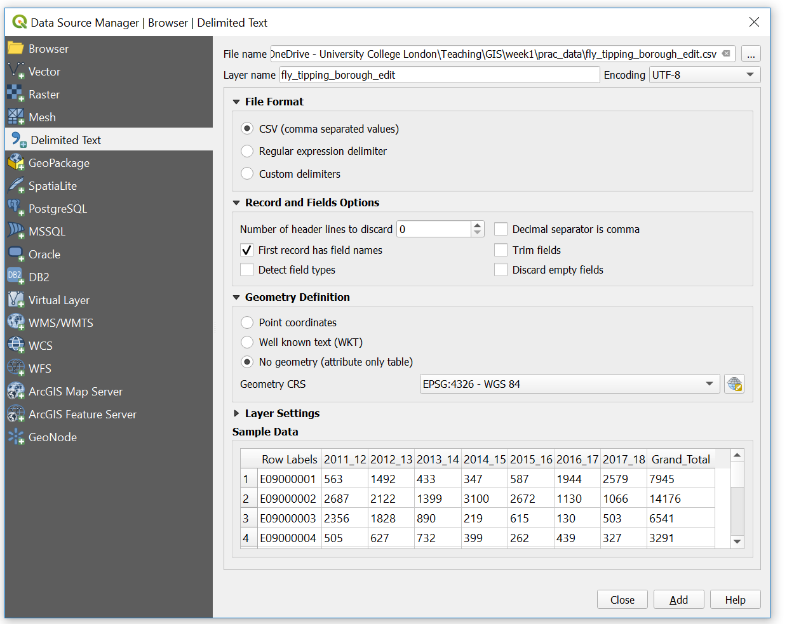
Does the sample data seem right?
- If so, click add then close
Note Your .csv might have a extra header present (a row before Row Labels). You can either: (a) close this and go and delete this in the .csv now and reload it or (b) change the number of header lines to discard to 1 in the Record and Fields Options in the screenshot above.
1.6.4.2 Join data
- Right click on the London boroughs layer > Properties > Joins
- Click the plus button at the bottom of the box
- Complete the dialogue box
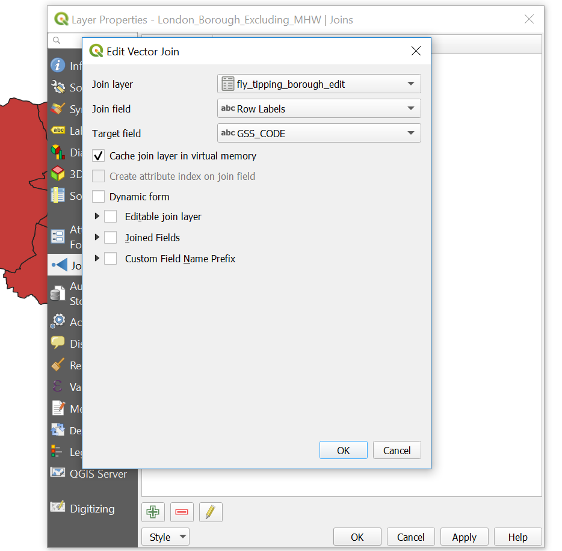
1.6.4.3 Export data
Now let’s export to a GeoPackage.
- Right click on the London boroughs layer > Export > Save Feature As
- Select the GeoPackage format and complete the File name (the saved file name for the GeoPackage) and the Layer name (the name for this layer within the GeoPackage). Recall that a GeoPackage can store many data layers as a single file
- The new layer will be added to the map, so you can remove the old one (Right click on the layer > Remove Layer). Make sure you remove the right one!
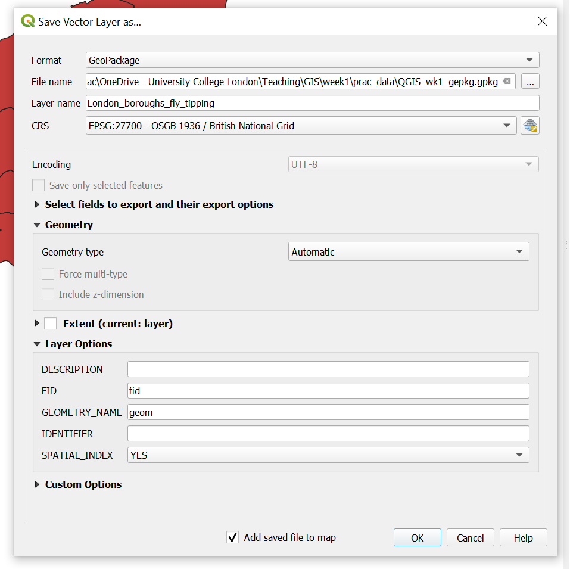
We’ve now made a GeoPackage that we can connect our map project to.
- Under Browser, Right click on GeoPackage > New Connection > Navigate to your GeoPackage
- Click the down arrow left to GeoPackage and you should see the one you just navigated to. Click the down arrow on the database and you can see your layer.
- Now we are going to import our
.csvinto our GeoPackage. To do so go: Database > DB Manager - Select your GeoPackage in the left hand pane
- Import layer/file then select the
.csv. Click Ok.
Again, remember that the .csv in the Layers tab (bottom left) is the original. Remove it, then from the GeoPackage just click, hold and drag the .csv into the layer pane.
Now let’s make a quick thematic map…
- Right click on your London boroughs layer > Properties > Symbology
- Select categorised and choose a data column and color ramp > click Classify
You could also select graduated, however our joined data fields are in the wrong data type. If you wish to change them follow this guide
- Save your QGIS project
You should have produced something like this:
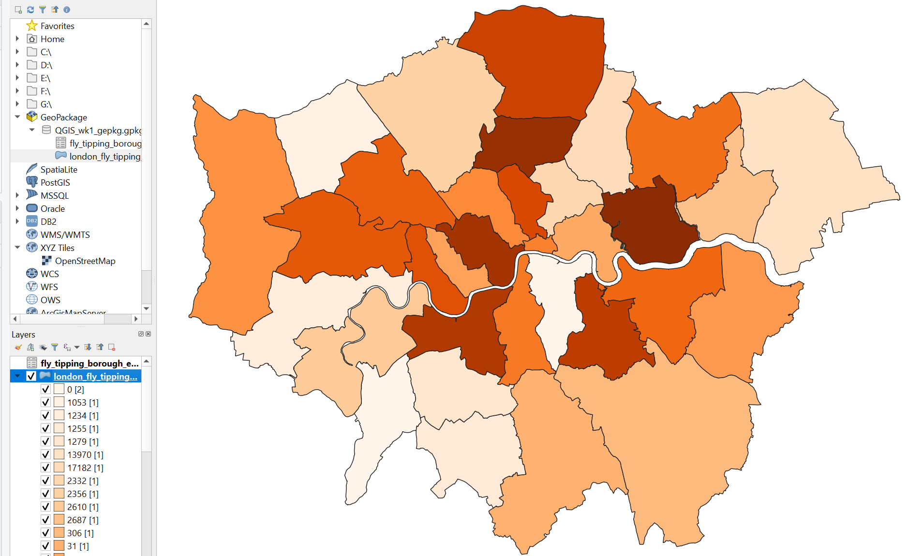
We haven’t talked about the Coordiante Reference System (CRS) (or Spatial Reference System (SRS)) of our map document
A coordinate reference system is a series of parameters that define the coordinate system. Within GIS we use geographic or projected coordinate systems. The former uses a three-dimensional spherical surface to define locations of Earth, whereas the latter is defined on a flat, two-dimensional surface giving it constant lengths, angles and areas. We cover this in much more detail later on in subsequent weeks.
QGIS defaults to the Coordinate Reference System (CRS) WGS 84, or known by its European Petroleum Survey Group (EPSG) code 4326. However, when you add your first layer it will default the CRS of the layer. We’ll go into the background of EPSG next time.
You can change the CRS by going Project > Properties and selecting CRS in the left hand pane.
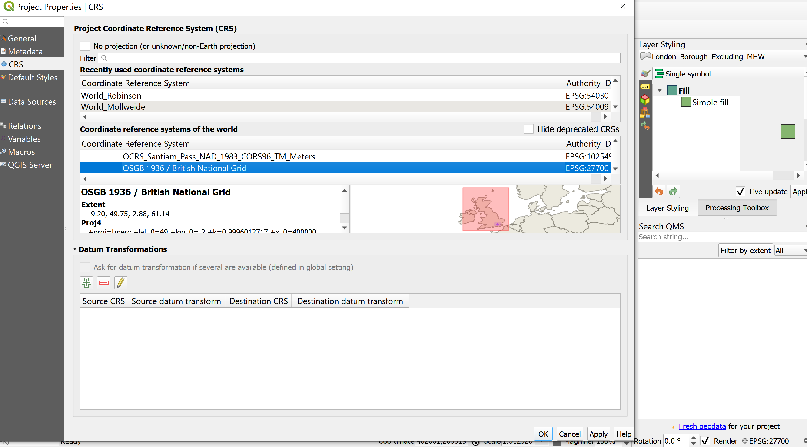
You can also access the project CRS by just clicking on the EPSG code in the bottom right of your QGIS window, in the screenshot above click EPSG:27700.
Note As we are going to open the same files in difference GIS systems it is important to close the software before moving on. If you don’t then files can be locked and unreadable as they are still considered to be in use.
1.6.5 R
1.6.5.1 Introduction
R is both a programming language and software environment, originally designed for statistical computing and graphics. R’s great strength is that it is open-source, can be used on any computer operating system and free for anyone to use and contribute to. Because of this, it is rapidly becoming the statistical language of choice for many academics and has a huge user community with people constantly contributing new packages to carry out all manner of statistical, graphical and importantly for us, geographical tasks.
The purpose of this practical is just to demonstrate data loading and manipulation in different software. The next practical will provide much more detail on R, so don’t worry about that.
In RStudio go:
- File > New File > R Script
You should be able to see these quadrants (without the code):
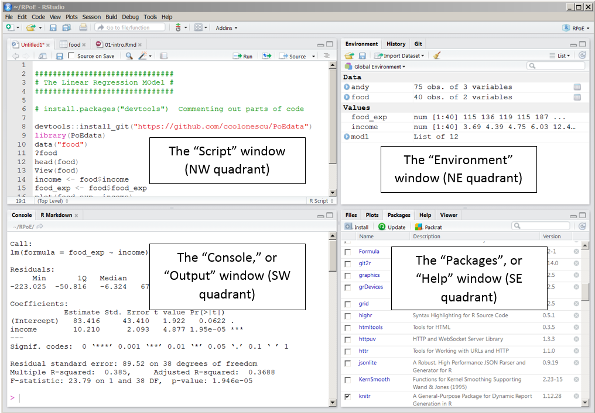
Below are bits of code, to start we will work using the console. So just copy the bits of code into the console window, changing the file names to where your data is stored. Then at the end of this section I’ll show you how to make a script.
R works on packages that are collections of functions and data. Packages are bits of code that extend R beyond the basic statistical functionality it was originally designed for. For spatial data, they enable R to process spatial data formats, carry out analysis tasks and create some of the maps that follow. Most pacakges are easily recognisable through a hexagon (hex) logo, or sticker. Mitchell O’Hara-Wild has even produced some code to make your own!
Bascially, without packages, R would be very limited. With packages, you can do virtually anything! One of the issues you will come across is that packages are being continually developed and updated and unless you keep your version of R updated and your packages updated, there may be some functions and options not available to you. This can be a problem, particularly with University installations which (at best) may only get updated once a year. Therefore, apologies in advance if things don’t work as intended, but there is often a work around.
For this practical we will need the ones listed in the code chunk below. Whilst we’ve installed them (with the code below), we haven’t yet loaded them. It’s best practice to do all this at the start of your code, however, for demonstration purposes I’ll load each one as we need it.
install.packages(c("sf", "tmap", "tmaptools", "RSQLite", "tidyverse"),
repos = "https://www.stats.bris.ac.uk/R/")- We can also install and load packages through RStudio. If you can see the package listed in the package tab it is installed and a tick means it is loaded.
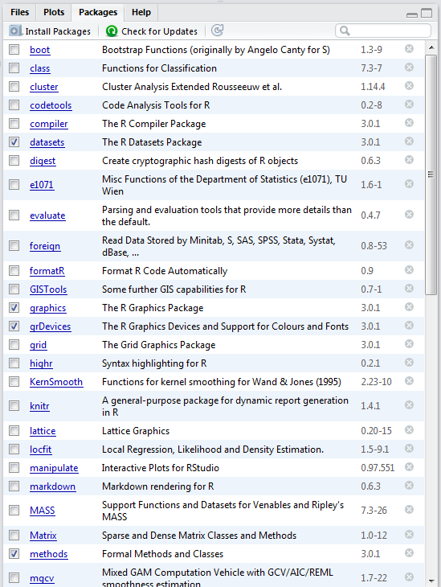
Packages we’ve installed with our code:
sf: simple features, standard way to encode spatial vector datatmap: layer-based and easy approach to make thematic mapstmaptools: set of tools for reading and processing spatial dataRSQLite: embeds the SQLite database engine in R
Here, repos stands for repository where we will download the packages from. Once you have set it, you shouldn’t need to specify it again. Whilst we’ve installed the packages we haven’t loaded them…this is done through using library() function. Thanks to Dianne Cook for this image…
If you are using a Mac you might also need rgdal… this is because a lot of packages are dependent on it and it might not properly install…
install.packages("rgdal")Then load rgdal…
library(rgdal)If you still have issues the check out the Mac R issues section
1.6.5.2 Load data
Load the sf package so we can read our shapefile in — remember to change to filepath to your shapefile.

For this first practical we’ll just leave the data where it is, next week we’ll show you how to use projects to make calling data much easier.
Note by default in R, the file path should be defined with
/but on a windows file system it is defined with\. Using\\instead allows R to read the path correctly – alternatively, just use/
library(sf)
# change this to your file path!!!
shape <- st_read("C:/Users/Andy/OneDrive - University College London/Teaching/CASA0005/2020_2021/CASA0005repo/Prac1_data/statistical-gis-boundaries-london/ESRI/London_Borough_Excluding_MHW.shp")## Reading layer `London_Borough_Excluding_MHW' from data source
## `C:\Users\Andy\OneDrive - University College London\Teaching\CASA0005\2020_2021\CASA0005repo\Prac1_data\statistical-gis-boundaries-london\ESRI\London_Borough_Excluding_MHW.shp'
## using driver `ESRI Shapefile'
## Simple feature collection with 33 features and 7 fields
## Geometry type: MULTIPOLYGON
## Dimension: XY
## Bounding box: xmin: 503568.2 ymin: 155850.8 xmax: 561957.5 ymax: 200933.9
## Projected CRS: OSGB 1936 / British National GridNote If you are working on the UCL RStudio Server and have a shapefile (along with all the other relevant files required) you will just need to use…
shape <- st_read("London_Borough_Excluding_MHW.shp")As RStudio cloud knows you have setup a project and to look for files within it…we cover this very soon for RStudio desktop.
To get a summary of the data held within the shapefile data (attribute table) enter the following:
summary(shape)## NAME GSS_CODE HECTARES NONLD_AREA
## Length:33 Length:33 Min. : 314.9 Min. : 0.00
## Class :character Class :character 1st Qu.: 2724.9 1st Qu.: 0.00
## Mode :character Mode :character Median : 3857.8 Median : 2.30
## Mean : 4832.4 Mean : 64.22
## 3rd Qu.: 5658.5 3rd Qu.: 95.60
## Max. :15013.5 Max. :370.62
## ONS_INNER SUB_2009 SUB_2006 geometry
## Length:33 Length:33 Length:33 MULTIPOLYGON :33
## Class :character Class :character Class :character epsg:NA : 0
## Mode :character Mode :character Mode :character +proj=tmer...: 0
##
##
## To have a quick look what the shapefile looks like enter the following:
plot(shape)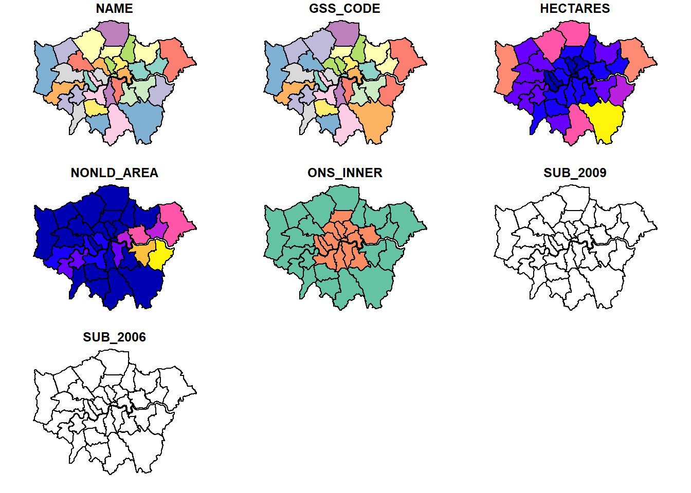
That plots everything in the shapefile (all the attitbues) if you just wanted the geometry (outline of the shape) you could use…
library(sf)
shape %>%
st_geometry() %>%
plot()
From what we did in QGIS this should look familiar.
We now need to load our .csv file:
library(tidyverse)
#this needs to be your file path again
mycsv <- read_csv("C:/Users/Andy/OneDrive - University College London/Teaching/CASA0005/2020_2021/CASA0005repo/Prac1_data/fly_tipping_borough_edit.csv") ##
## -- Column specification --------------------------------------------------------
## cols(
## `Row Labels` = col_character(),
## `2011_12` = col_double(),
## `2012_13` = col_double(),
## `2013_14` = col_double(),
## `2014_15` = col_double(),
## `2015_16` = col_double(),
## `2016_17` = col_double(),
## `2017_18` = col_double(),
## Grand_Total = col_double()
## )When you load tidyverse you might get a list of conflicts, this basically means that several packages have functions named the same thing. For example there is a function named filter() in the packages dplyr and stats. If you wanted to use the dplyr version you would use dplyr::filter() or for the stats version it would be stats::filter()…
Note Your .csv might have a extra header present (a row before Row Labels). You can either: (a) stop and go and delete this in the .csv now and reload it or (b) change the code to… mycsv <- read_csv("Prac1_data/fly_tipping_borough_edit.csv", skip = 1)
To view the data just input:
mycsv ## # A tibble: 34 x 9
## `Row Labels` `2011_12` `2012_13` `2013_14` `2014_15` `2015_16` `2016_17`
## <chr> <dbl> <dbl> <dbl> <dbl> <dbl> <dbl>
## 1 E09000001 563 1492 433 347 587 1944
## 2 E09000002 2687 2122 1399 3100 2672 1130
## 3 E09000003 2356 1828 890 219 615 130
## 4 E09000004 505 627 732 399 262 439
## 5 E09000005 6713 2232 3189 3926 3980 4366
## 6 E09000006 306 479 653 462 326 228
## 7 E09000007 5541 5962 8281 4837 4719 4656
## 8 E09000008 31 108 460 712 1707 637
## 9 E09000009 6727 5679 6543 5521 6067 12688
## 10 E09000010 7262 3595 3269 4937 5292 10894
## # ... with 24 more rows, and 2 more variables: 2017_18 <dbl>, Grand_Total <dbl>1.6.5.3 Join data
In R we’ve given our London boroughs shapefile the name shape and our flytipping .csv the name mycsv. If you look in the Environment quadrant you should see them both listed.
Join the .csv to the shapefile. Here, replace Row Labels with whatever your GSS_CODE is called in the .csv:
shape <- shape%>%
merge(.,
mycsv,
by.x="GSS_CODE",
by.y="Row Labels")Let’s break this down a bit. We just created a tibble of mycsv (this is a new form of a dataframe) where each column has a variable and each row contains a set of values — so basically a normal table. We did this simply by using read_csv() to read the data in. We then matched our csv to our shape based on the GSS_CODE values in both.
Check the merge was successful, this is just going to show the top 10 rows:
shape%>%
head(., n=10)## Simple feature collection with 10 features and 15 fields
## Geometry type: MULTIPOLYGON
## Dimension: XY
## Bounding box: xmin: 509702.4 ymin: 155850.8 xmax: 554089.2 ymax: 200933.9
## Projected CRS: OSGB 1936 / British National Grid
## GSS_CODE NAME HECTARES NONLD_AREA ONS_INNER SUB_2009
## 1 E09000001 City of London 314.942 24.546 T <NA>
## 2 E09000002 Barking and Dagenham 3779.934 169.150 F <NA>
## 3 E09000003 Barnet 8674.837 0.000 F <NA>
## 4 E09000004 Bexley 6428.649 370.619 F <NA>
## 5 E09000005 Brent 4323.270 0.000 F <NA>
## 6 E09000006 Bromley 15013.487 0.000 F <NA>
## 7 E09000007 Camden 2178.932 0.000 T <NA>
## 8 E09000008 Croydon 8649.441 0.000 F <NA>
## 9 E09000009 Ealing 5554.428 0.000 F <NA>
## 10 E09000010 Enfield 8220.025 0.000 F <NA>
## SUB_2006 2011_12 2012_13 2013_14 2014_15 2015_16 2016_17 2017_18 Grand_Total
## 1 <NA> 563 1492 433 347 587 1944 2579 7945
## 2 <NA> 2687 2122 1399 3100 2672 1130 1066 14176
## 3 <NA> 2356 1828 890 219 615 130 503 6541
## 4 <NA> 505 627 732 399 262 439 327 3291
## 5 <NA> 6713 2232 3189 3926 3980 4366 7483 31889
## 6 <NA> 306 479 653 462 326 228 258 2712
## 7 <NA> 5541 5962 8281 4837 4719 4656 12671 46667
## 8 <NA> 31 108 460 712 1707 637 2684 6339
## 9 <NA> 6727 5679 6543 5521 6067 12688 5471 48696
## 10 <NA> 7262 3595 3269 4937 5292 10894 5855 41104
## geometry
## 1 MULTIPOLYGON (((531145.1 18...
## 2 MULTIPOLYGON (((543905.4 18...
## 3 MULTIPOLYGON (((524579.9 19...
## 4 MULTIPOLYGON (((547226.2 18...
## 5 MULTIPOLYGON (((525201 1825...
## 6 MULTIPOLYGON (((540373.6 15...
## 7 MULTIPOLYGON (((528840.2 18...
## 8 MULTIPOLYGON (((535009.2 15...
## 9 MULTIPOLYGON (((510253.5 18...
## 10 MULTIPOLYGON (((531023.5 20...Now, let’s make a quick thematic map (or a qtm) using the package tmap. I’ve made mine for flytipping between 2011 and 2012 (column 2011_12). But check what your coloumn name is from the adove code head(shape, n=10) it might be slightly different like 2011-2012 or x2011_2012….
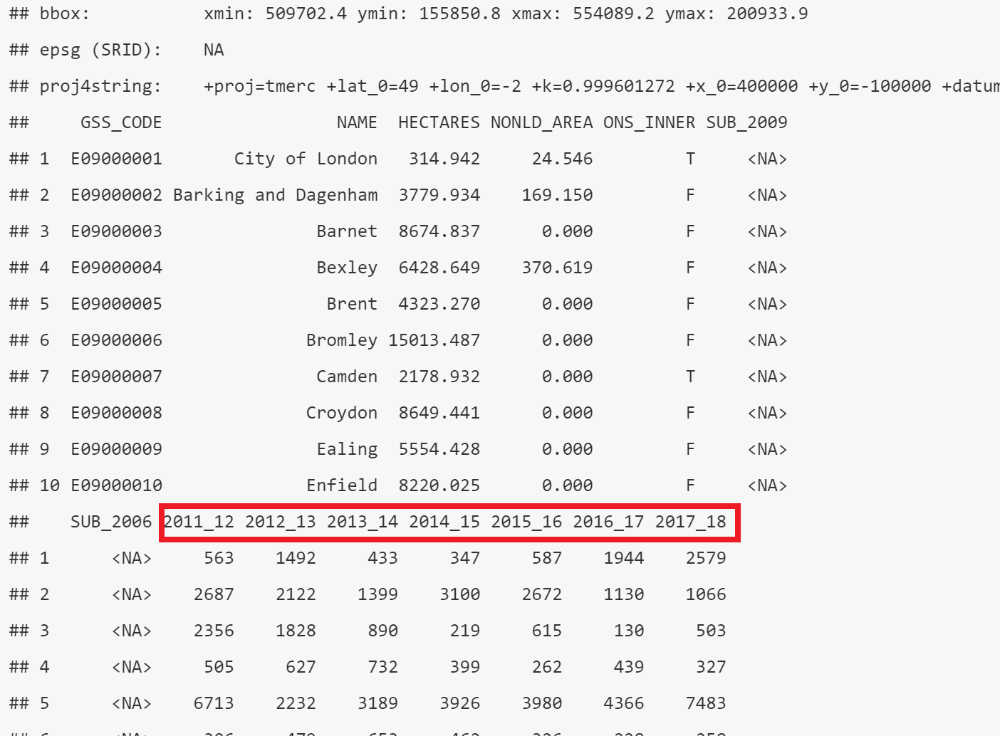
library(tmap)
tmap_mode("plot")
# change the fill to your column name if different
shape %>%
qtm(.,fill = "2011_12")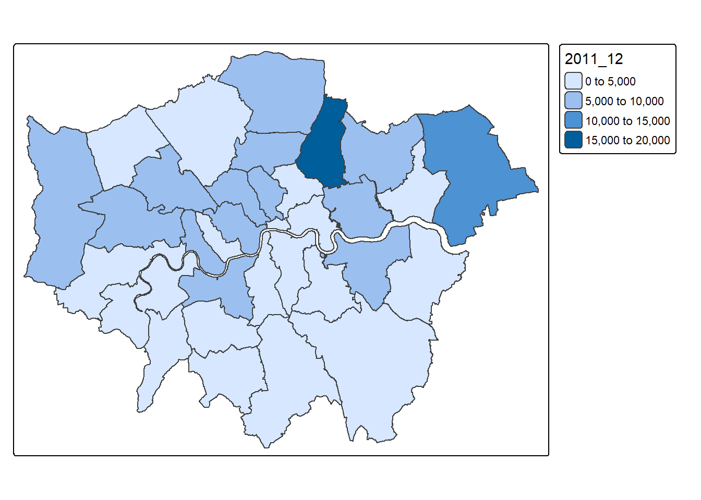
1.6.6 Export data
Finally write shape to a new GeoPackage (.gpkg) giving it the layer name of your choice:
shape %>%
st_write(.,"C:/Users/Andy/OneDrive - University College London/Teaching/CASA0005/2020_2021/CASA0005repo/Prac1_data/Rwk1.gpkg",
"london_boroughs_fly_tipping",
delete_layer=TRUE)## Deleting layer `london_boroughs_fly_tipping' using driver `GPKG'
## Writing layer `london_boroughs_fly_tipping' to data source
## `C:/Users/Andy/OneDrive - University College London/Teaching/CASA0005/2020_2021/CASA0005repo/Prac1_data/Rwk1.gpkg' using driver `GPKG'
## Writing 33 features with 15 fields and geometry type Multi Polygon.So here, we are saying the shape is the object we want to save, then to the GeoPackage file path, with the layer name of london_boroughs_fly_tipping. I’ve set delete_layer to true so I could overwrite mine when I developed this practical. Changing it to false would generate an error message if you ever tried to re-run the code.
Let’s also add the .csv as we did in QGIS. This is a bit more complicated as we have to use the SQLite database package. Firstly, connect to the .gpkg we just made:
library(readr)
library(RSQLite)
con <- dbConnect(RSQLite::SQLite(),dbname="C:/Users/Andy/OneDrive - University College London/Teaching/CASA0005/2020_2021/CASA0005repo/Prac1_data/Rwk1.gpkg")Now examine what is in the .gpkg…you can see that i’ve already got my original_csv stored within the .gpkg as when i developed this practical i made sure it was working!
con %>%
dbListTables()## [1] "gpkg_contents"
## [2] "gpkg_extensions"
## [3] "gpkg_geometry_columns"
## [4] "gpkg_metadata"
## [5] "gpkg_metadata_reference"
## [6] "gpkg_ogr_contents"
## [7] "gpkg_spatial_ref_sys"
## [8] "gpkg_tile_matrix"
## [9] "gpkg_tile_matrix_set"
## [10] "london_boroughs_fly_tipping"
## [11] "original_csv"
## [12] "rtree_london_boroughs_fly_tipping_geom"
## [13] "rtree_london_boroughs_fly_tipping_geom_node"
## [14] "rtree_london_boroughs_fly_tipping_geom_parent"
## [15] "rtree_london_boroughs_fly_tipping_geom_rowid"
## [16] "sqlite_sequence"Add your .csv and disconnect from the .gpkg:
con %>%
dbWriteTable(.,
"original_csv",
mycsv,
overwrite=TRUE)
con %>%
dbDisconnect()Here overwrite let’s you well..overwrite the exisiting file…if this wasn’t specified as true you would get an error saying the file already existed if you tried to run this code again.
1.6.6.1 Making a script
To convert this bit of analysis into a script that we could save and run again in future, I would write the following in the script quadrant:
library(sf)
library(tmap)
library(tmaptools)
library(RSQLite)
library(tidyverse)
#read in the shapefile
shape <- st_read(
"C:/Users/Andy/OneDrive - University College London/Teaching/CASA0005/2020_2021/CASA0005repo/Prac1_data/statistical-gis-boundaries-london/ESRI/London_Borough_Excluding_MHW.shp")
# read in the csv
mycsv <- read_csv("C:/Users/Andy/OneDrive - University College London/Teaching/CASA0005/2020_2021/CASA0005repo/Prac1_data/fly_tipping_borough_edit.csv")
# merge csv and shapefile
shape <- shape%>%
merge(.,
mycsv,
by.x="GSS_CODE",
by.y="Row Labels")
# set tmap to plot
tmap_mode("plot")
# have a look at the map
qtm(shape, fill = "2011_12")
# write to a .gpkg
shape %>%
st_write(.,"C:/Users/Andy/OneDrive - University College London/Teaching/CASA0005/2020_2021/CASA0005repo/Prac1_data/Rwk1.gpkg",
"london_boroughs_fly_tipping",
delete_layer=TRUE)
# connect to the .gpkg
con <- dbConnect(SQLite(),dbname="C:/Users/Andy/OneDrive - University College London/Teaching/CASA0005/2020_2021/CASA0005repo/Prac1_data/Rwk1.gpkg")
# list what is in it
con %>%
dbListTables()
# add the original .csv
con %>%
dbWriteTable(.,
"original_csv",
mycsv,
overwrite=TRUE)
# disconnect from it
con %>%
dbDisconnect()You can then save your script through File > Save As.
If you are on a Mac you might also need to load rgdal…just add the following at the top of the script.
library(rgdal)1.6.7 What will I use
Well… it depends. If you wanted to quickly open a dataset to explore its contents then I’d use QGIS. However, if you had 100 raster images that you wanted to clip to your study area, I’d automate it in R. There are also specific packages developed for each type of software that might dictate what you use, for example I recently made use of the Urban Multi-scale Environmental Predictor (UMEP) plugin in QGIS. That said, as I needed to match different hourly meteorological variables over a three year period I automated the first part of the analysis in R and loaded a .csv into QGIS. Recent advancments have also closed the gap somewhat between Graphic User Interface (GUI) GIS software (such as QGIS) and programming languages (such as R) with ‘bridges’ that allow you to control GUI software through code. To learn more about these bridges read Lovelace et al. (2019) chapter 9.
1.7 Data sources and task
Below I’ve listed a few good data sources. Explore these and any others you can find and get an interesting dataset (e.g. in this practical our flytipping .csv) that you could join to some spatial data (e.g. in this practical the London boroughs .shp). This could be for any location in the world.
1.7.1 UK Data Service
The UK Data Service geography service (https://census.edina.ac.uk/) has a library of hundreds of current and former boundary datasets for which attribute data are produced in the UK.
1.7.2 ONS
The Office for National Statistics (ONS) are the national statistical agency for England and Wales and have recently started to provide access to boundary data for the statistics they produce for various geographic areas.
Many of the boundaries on the ONS Geoportal are also available from the Edina Census Geography website in a more flexible fashion, however the ONS website provides very quick access to bulk-downloads — something which can be very useful when reading data directly from the web using computer software. From the ONS website you can also extract the URL at which the data is stored to use directly within your future code…
1.7.3 nomis
Nomis is provided by the ONS giving free access to UK labour market statistics. You can also bulk download census data from the site too!
1.7.4 OS
The Ordnance Survey (OS) are the national mapping agency for the UK. A few years ago, they opened up a number of their data products for public use including greenspace, OS Open Map and OS Terrain.
For the full range see: https://www.ordnancesurvey.co.uk/business-and-government/products/finder.html?Licensed%20for=OpenData%20(Free)&withdrawn=on
1.7.5 Edina Digimap
Before the Ordnance Survey opened up much of its data for public use, academics and students in the UK could access OS data using the Edina Digimap Service —- this service is still available today and provides access to a number of products in addition to those available from OS Open Data.
Perhaps the most exciting of the additional OS data products available from Digimap is OS MasterMap. MasterMap is a framework for all OS data and contains layers of data that include details of real world objects such as buildings, roads, paths, rivers, physical structures and land parcels, as well as the complete UK transport network. Whilst we still are required to go through Edina OS have recently announced plans to make this dataset free in the near future under the new Geospatial Commission.
1.7.6 OSM
Open Street Map (OSM) is a fantastic resource —- as the name suggests, all data contained in Open Street Map are open and free for anyone to use. Much like Wikipedia, anyone can contribute content to OSM and this brings with it its own benefits (frequent updates, very large user-base) and problems (data quality and patch coverage). OSM is a very good example of Volunteered Geographic Information (VGI).
It’s possible to download OSM data straight from the website, although the interface can be a little unreliable (it works better for small areas). There are, however, a number of websites that allow OSM data to be downloaded more easily and are directly linked to from the ‘Export’ option in OSM. Geofabrik (https://www.geofabrik.de/data/download.html) allows you to download frequently updated Shapefiles for various global subdivisions.
1.7.7 DEFRA
The Department for Environment and Rural Affairs (DEFRA) have recently created the Data Services Platform to openly distribute environmental data. See: https://environment.data.gov.uk/
1.7.8 Data lists
Another good place to start searching for data are data lists. They simply provide a comprehensive overview of all available data conveniently categorised by discipline and country.
I normally use this one: https://freegisdata.rtwilson.com/
1.8 Summary
Within this practical we have explored the different types, formats and software used to store, analyse and manipulate spatial data. In reflecting upon this practical you should consider the (dis)advantages of each, where and when they might be appropriate and the overall practicality. Next week we will delve further into R and RStudio.
1.9 Feedback
Was anything that we explained unclear this week or was something really clear…let us know using the feedback form. It’s anonymous and we’ll use the responses to clear any issues up in the future / adapt the material.
1.10 Mac R issues
If you have a Mac and run into issues using R, try this…
It seems that a lot of the packages are dependent on rgdal, which might not properly install…
Order of operations
Install java JDK (to respond to error Unable to find any JVMs matching version “(null)”, which occurred when we tried to load
OpenStreetMappackage in RStudio)Download and install the appropriate
.dmgfrom Java SE Development Kit 11.0.1Run sudo R CMD javareconf in Terminal as described in this tutorial(though don’t follow this tutorial exactly, just up to that terminal command).
(Maybe) restart your computer (not really sure when this is necessary).
Install GDAL
GDAL, the Geospatial Data Abstraction Library, appears to be a massively important package / library / whatever that a lot of the spatial tools we use depends on. This is where things might be sticky — we already installed GDAL for QGIS, but obviously RStudio can’t find that install … dunno how to update the pointers, but we found that installing GDAL (again?) solved it. We HOPE that this didn’t ruin or break any other software we’ve installed, only time will tell :grimacing:
- To install GDAL on a mac, first (if you haven’t) install homebrew, the mac package manager
This can be done by executing /usr/bin/ruby -e "$(curl -fsSL https://raw.githubusercontent.com/Homebrew/install/master/install)" in Terminal, inputting password etc.
- Now we’re ready to brew install gdal (also in Terminal), which will run through and install a massive list of dependencies etc.
Set up RStudio
Restart RStudio (if the following doesn’t work on first go…)
Run through all the
install.packages()commands one by one in RStudio and check to make sure that they install.Check if
rgdalpackage is working.Check the other packages
OpenStreetMap,tmap, etc.